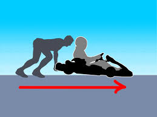
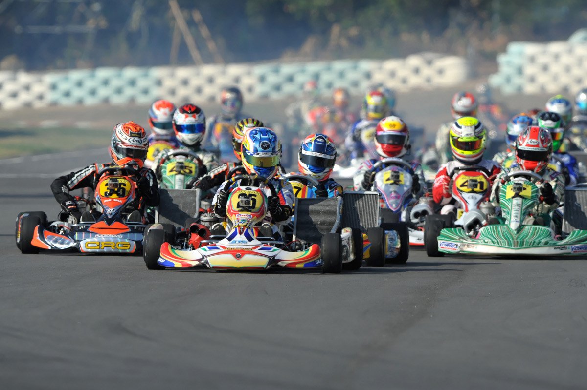
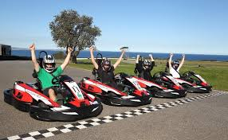

Här går starten! Motorer rusar, hjärtan slår fortare och spänningen är oliderlig. Här är det många som åker av redan innan första kurvan kommer och man vet aldrig vem som kommer att leda ända in till mål. Som tur är Prinsen rätt snabb (som Sofia brukar säga).
Den här bilden brukar sitta ovanför prinsens startplats så att han inte glömmer vilket håll han ska köra mot. För er som aldrig har kört gokart förut så åker man alltså åt det håll som pilen pekar åt (i det här fallet åt höger). Om du är som ”lill Kalle” så är alltså höger samma hand som du hälsar med.
När väl alla har kommit iväg så går det (oftast) med en väldig fart. En gokart kan komma upp i hela 15 km/ timma om man har medvind och hemlängtan. Tyvärr var de ”kartsen” (slang vi proffs använder) spärrade till 5 km / timman för att Kalle inte vågar köra fortare och det ska ju vara lika för alla!
Det här är tyvärr en baksida med att alla ”kartsen” går lika fort, alla kommer fram samtidigt. Men ja, ja det är ju spännande så länge inte Kalle är med, som vi brukar skämta om i depån he he he. Efter medaljutdelning och när alla har ställt in sina ”karts” i garaget väntar alltid drottningen med pannkakor!
Sofia har övertalat ”Lill Kalle” att han inte längre får köra ”kart” så tyvärr kan jag meddela att han nu har sökt in på HögskoleCentrum Bohuslän till hösten. Ryktena säger att han ska plugga till E-handelsutvecklare, men jag undrar om han verkligen kommer in där. -Ja, ja det får framtiden utvisa.